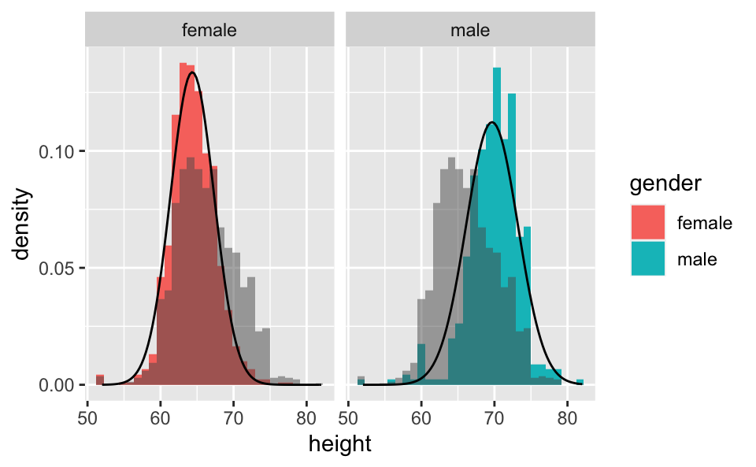
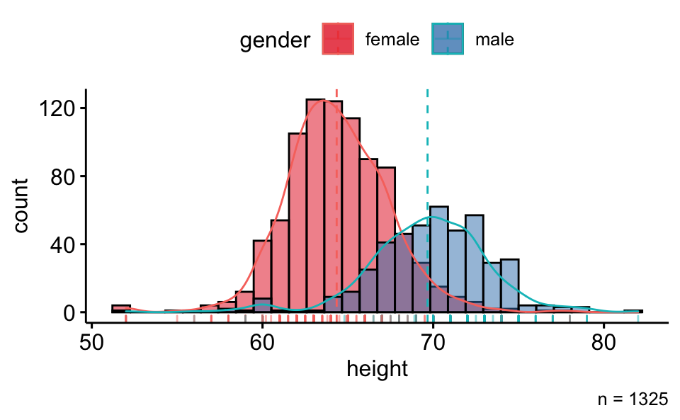
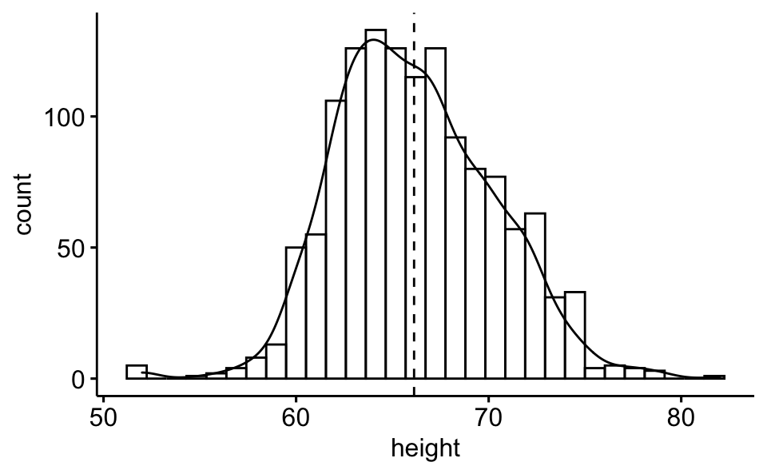

Histogram of height
For each sex group separately
d2 <-
d |>
select(-gender)d_summary <-
d %>%
group_by(gender) %>%
summarise(height_m = mean(height, na.rm = T),
height_sd = sd(height, na.rm = T))
d_summary## # A tibble: 2 x 3
## gender height_m height_sd
## <chr> <dbl> <dbl>
## 1 female 64.3 2.99
## 2 male 69.7 3.55d |>
ggplot() +
aes() +
geom_histogram(aes(y = ..density.., x = height, fill = gender)) +
facet_wrap(~ gender) +
geom_histogram(data = d2, aes(y = ..density.., x = height), alpha = .5) +
stat_function(data = d_summary %>% filter(gender == "female"),
fun = dnorm,
#color = "red",
args = list(mean = filter(d_summary, gender == "female")$height_m,
sd = filter(d_summary, gender == "female")$height_sd)) +
stat_function(data = d_summary %>% filter(gender == "male"),
fun = dnorm,
#color = "red",
args = list(mean = filter(d_summary, gender == "male")$height_m,
sd = filter(d_summary, gender == "male")$height_sd)) +
scale_fill_discrete()
Let’s overlay the empirical densities:
gghistogram(d,
x = "height",
fill = "gender",
rug = TRUE,
add_density = TRUE,
add = "mean") +
scale_fill_brewer(type = "qual",
palette = "Set1") +
labs(caption = "n = 1325")
For the whole sample
I.e,. with groups (gender) removed:
gghistogram(d,
x = "height",
add_density = TRUE,
add = "mean")
ggplot(d, aes(height)) +
geom_density() +
stat_theodensity(colour = "red") +
facet_wrap(~ gender)## $start.arg
## $start.arg$mean
## [1] 64.34442
##
## $start.arg$sd
## [1] 2.983323
##
##
## $fix.arg
## NULL
##
## $start.arg
## $start.arg$mean
## [1] 69.66787
##
## $start.arg$sd
## [1] 3.548706
##
##
## $fix.arg
## NULL